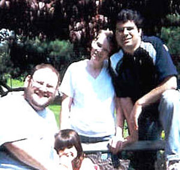

Jester-Knight
Literature
Film
Music
Visual Art
Tributes
Submissions
Links
Contact
Marc Orlow (1968 - 2005)

Reflections on a Friend
1986. First day of college at "The Beav" and I'm feeling like a fish out of water rather than the big fish in a small pond I was hoping I'd be. To counteract my nervousness I had slept all the way to Glenside, a suburb of Philadelphia, and coming up the stairs to the hall that would be my home for the next four years I immediately felt I may have still been sleeping and entering the leading edge of what for a shy kid like myself was unquestionably a nightmare. There were guys and girls and noise and about six different stereos all playing at full blast. Down the hall two tall guys in felt fedoras were playing with Transformers while nearer to me a group of tatooed guys stood in their doorways smoking cigarettes with their girlfriends. I didn't know where to begin or where I would fit in.
Then I saw a guy with a grizzly beard and a good head of curly hair who towered over everyone else come walking cheerfully out of his room with a hamster. He smiled at everyone and seemed more like a September Santa Claus there to keep things lite rather than merely a college student like the rest of us. I don't remember if we talked that first day, but it had to have been soon after, and every day after that. Marc made me laugh and made a hard day a little easier.
Almost 20 years later, not so much had changed. We had reconnected in 2001 after losing contact after graduation when Marc saw a blurb about me in the alumni magazine. An understanding staff member in the Alumni office had given him my email address. I remember being thrilled and emailing him right away. We got together a few months later at the college and had been growing closer and closer ever since. Marc was there when I had my first poetry reading, at the Book Bin in Pt. Pleasant, NJ, a place he visited with us a few times after. He brought an old college friend of ours with him and that day was one that holds a dozen pleasant memories for me.
From that day on, Marc and I spoke several times a week, either by phone or thru emails and IMs and he came to visit us on several occasions. We had a great weekend in Atlantic City with him, when we got to meet his Mom (who has a heart of gold as precious as his) and his aunt and we spent an amazing evening at one of his favorite restaurants in Ventnor, where the owners and staff hovered around our table as if we were family. That was the effect Marc had on people. He never came to see us without a big bag of gifts for everyone. And gifts that spoke personally to each person they were given to. He encouraged us when we decided to open the theatre school and start our theatre company and he encouraged our two children in their interests. Jolie sitting on his lap while he read her a book became a familiar and welcome sight. He was a welcome addition to family birthday parties and last Thanksgiving, which none of us knew would be his last, he talked joyfully and thankfully about the future more than I had ever heard him before.
Marc was quick with a kind word and a good joke and he helped us in ways that we can't even begin to express. He drove out from Philly to help Tonya load and unload boxes for several hours even though his hip was giving him trouble when we moved. He was the first person I would call when I needed a break from the World and in the weeks after his death I found myself picking up the phone to call him, stopping myself only after the first few numbers had been dialed.
Later this year I hope to share with you some of Marc's writing. The wounds are a little too new, the grieving still too far from done for the people closest to him to begin the process of sorting thru his papers. For now I can only say that whether it was his material for his stand-up routine or chapters for his semi-autobiography or the parody he wrote for his friends' wedding, a genuine wit and charm was always there in what Marc wrote, because it was there in the way he lived.
I miss my friend very much and the world is a little more serious and dull without him here. For me he'll always be the guy in 1986 with the big grin and good head of hair. The guy with the hamster. The guy who always spoke his mind and who never said "No, I haven't got the time." The guy who never took a kind word or a bit of effort for granted from his friends.
I learned more from Marc than I could ever hope to express in this Reflection, but his spirit will always be there, informing us in the work we do.
As a counselor, Marc helped countless people. It was in many ways the perfect vocation for a generous man like he was. Because of that generosity and wish to make the world a better place person by person and word by word, it is with great pleasure that I announce here that the inaugural season of the New Mystics Theatre Company and our original play "Voices of Violence" will be dedicated to Marc's memory.
I know that wherever he is, he's doing two shows a night and keeping them laughing onstage and off.
Joey Madia, March 2, 2005
We received this on March 6 from Chuck Regan, one of Joey’s college roommates and a long-time friend of Marc’s:
Hey Joe-
I just read your message about Marc. It made me think about some other things about him that you may or may not have known.
When he was on the hall with me Junior and Senior year, his dorm room was a mini animal rescue shelter. One of his roommates was a kitten which was terminally ill. He kept it with him for a straight few weeks trying to show it a little bit of the world before it left. Those were close to his words.
On a lighter note, on the hallway, I put up a blank posterboard for people to write in quotable quotes. In the context of people trying desperately to be clever and profound and perverse, Marc came out with:
"Come.... back.... here.... you.... rab.... bit...." - Mad Scientist.
He never took anything too seriously when it didn't have to be.
He never took himself too seriously either. In his Arcadia senior yearbook, he used a quote that only a few people would understand. "Yapple Dapple." Picture a fat cartoon genie complete with turban, sash, blousy shirt, and happy simple approach to life. Baboo was his name, and he was a supporting character on an obscure Hanna Barbara cartoon called "I Dream of Jeannie." [EDITOR”S NOTE: You may also know him, as our children did, from Laugh-olympics].Marc popped his head into my room one day and said that. I laughed so hard, I cried. I couldn't get the image of Marc in that same outfit out of my head, and he knew it.
Remember how he would ask to borrow weird things at Thomas dorm? Pop his head in and ask for a paperclip: “No? Do you have a banana peel? How about a brick?”
Thanks to Chuck for sharing these memories with all of us. You can see some of Chuck’s artwork and graphic design here.
Following is Marc's favorite adaptation of the Serenity Prayer
God,
Grant me the serenity to accept the people I can not change,
The courage to change the person I can,
And the wisdom to know that person is ME!
Adapted version of Serenity Prayer, original by Reinhold Niebuhr